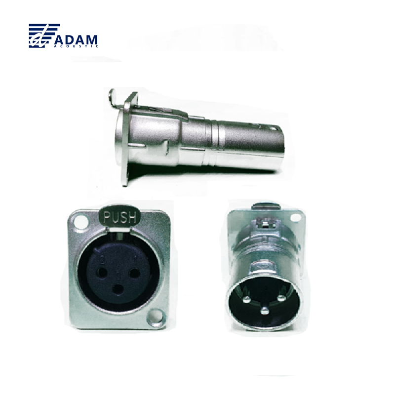
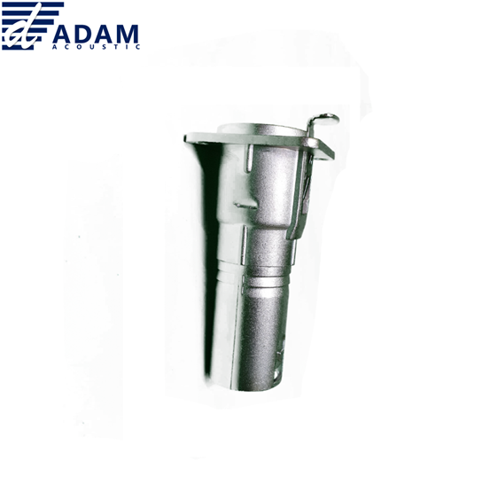
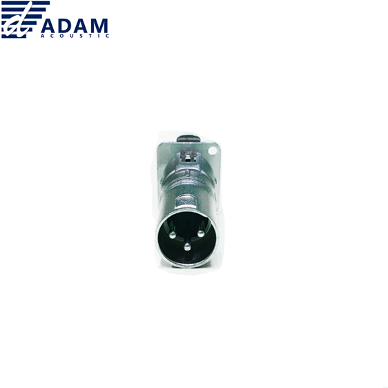

랙 · 앰프 · 믹서 섀시의 패널에 장착하는 3핀 XLR 판넬형 커넥터. 한쪽 면은 XLR Male, 반대 면은 XLR Female 구조로 신호 경로의 성별을 바꾸거나 섀시 내부 배선과 외부 케이블을 연결할 때 사용합니다. 다이캐스트 아연 합금 쉘과 니켈 도금 컨택을 채용해 반복 삽탈에도 신호 안정성을 유지합니다.

AD102는 ADAM(현대에이브이씨) 브랜드의 판넬(Panel) 장착형 3핀 XLR 커넥터입니다. 장비 섀시·랙 패널·리셉터클 박스의 벽면에 체결하여 외부 케이블을 내부 배선으로 끌어들일 때 사용합니다. AD102는 M-F(Male-Female) 방향, 대응 제품 AD201은 F-M(Female-Male) 방향으로 설치 방향에 맞춰 선택합니다.


AD102 판넬형 XLR M-F 커넥터의 주요 특징입니다.
ADAM AD102 공식 사양 기준입니다.
| 모델명 | AD102 |
|---|---|
| 타입 | 판넬형 3-Pin XLR Feed-Through 커넥터 (Male ↔ Female) |
| 마운트 방식 | Panel Mount · 섀시 / 랙 / 리셉터클 박스 장착 |
| 커넥터 방향 | 전면 Male ↔ 후면 Female |
| 쉘 재질 | Die-cast Zinc Alloy · Nickel 마감 |
| 컨택 도금 | Nickel Plated |
| 극수 | 3 Poles (밸런스드 오디오) |
| 락 구조 | XLR Latch Lock 호환 |
| 결선 방식 | Soldering (납땜 · 후면 단자) |
| 대응 방향 제품 | AD201 (Female ↔ Male · 반대 방향) |
| 호환 케이블 커넥터 | YS177 (Male) · YS176 (Female) 및 Neutrik NC3 계열 |
| 브랜드 | ADAM · (주)현대에이브이씨 |
| 권장소비자가 | 7,040원 / 개 (VAT 포함) |
※ 본 표는 ADAM 유통 사양서 기재 사항 및 XLR 판넬형 커넥터 업계 표준을 기준으로 작성되었습니다. 패널 컷아웃 치수는 설치 장비에 따라 확인 후 가공 바랍니다.
AD102와 함께 사용하기 좋은 커넥터 및 케이블입니다.